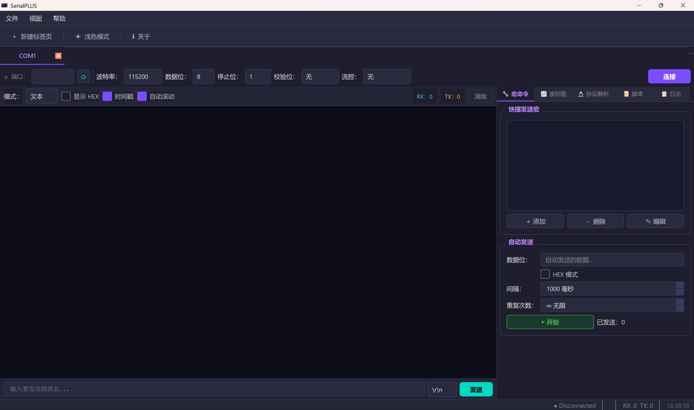

SerialPLUS 是一款基于 Qt6 的全功能串口调试工具，支持多标签页并发、实时波形绘图、Modbus 协议解析、脚本自动化等功能，Material Design 双主题，开箱即用。

从简单的串口收发到复杂的协议分析、自动化测试，SerialPLUS 都已内置。
全参数配置，一键刷新端口列表，连接状态实时指示。
文本与 HEX 双模式显示，支持时间戳与自动滚动。
每个标签页独立串口连接，真正意义上的多串口并发操作。
预设常用指令，双击即发，告别重复输入。
接收到数字数据时自动绘图，支持 1~8 通道同时显示。
内置 Modbus RTU 解析，并支持自定义帧格式。
支持 Python / Lua 脚本，实现复杂自动化测试流程。
带时间戳的完整收发日志，支持 HEX 格式保存。
Material Dark / Light 双主题，一键切换，全局生效。
只要串口收到的每行是数字，SerialPLUS 就会自动解析并绘制实时波形，无需任何额外配置。
下载安装包，双击运行，即刻连接串口。
点击下方按钮下载 Windows 安装包，运行后按提示完成安装（约 30 秒）。
启动 SerialPLUS 后，在左侧面板选择端口号和波特率，点击「连接」按钮，状态栏变绿即表示连接成功。
在底部输入框输入内容，按 Enter 发送。 需要多路调试时，按 Ctrl+T 新建标签页，每个标签独立连接不同串口。